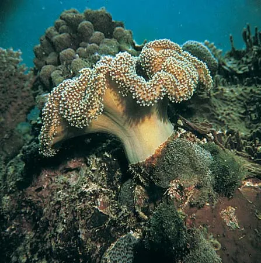
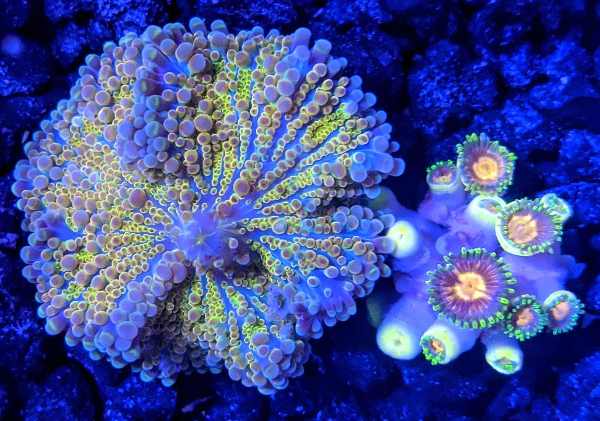
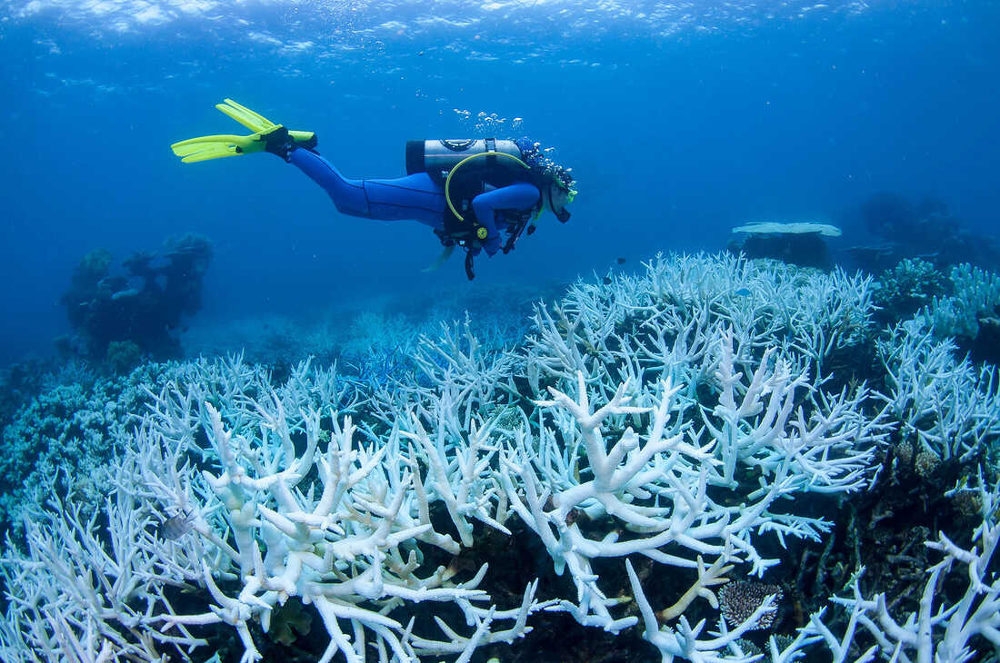
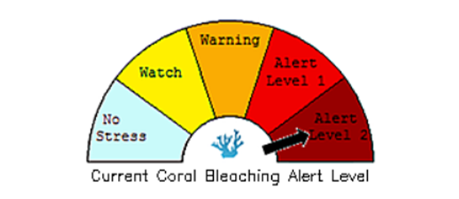
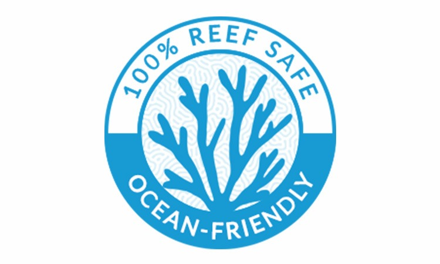
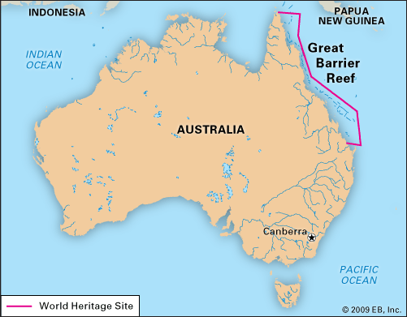
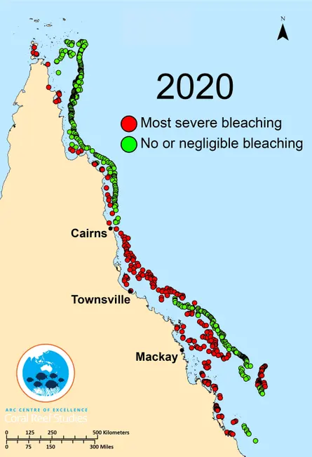

Corals are the most frequent animals in the food chain,and corals are very important to our economy as well.
Corals have recreation capabilities,can provide people and communities with lots of different jobs,and are a great source of medicine.Although,ensuring the safety of these beautiful creatures,especially from bleaching,are also very important.In this website,we will peovide you with plently of knowledge on Corals,Coral Bleaching,and what can we do to ensure the safety of the underwater world.
What are you waiting for?


What is Coral Bleaching?
When corals are under heat, they expel the algae that live in their tissues. Without these algae, corals’ tissues become white, revealing their skeleton. This is the basic process of coral bleaching. Though it may seem bizzare but, bleached corals are not dead. In fact, they are just more vulnerable and fragile to starvation and they are more prone to perish.

Scuba diving is a mode of underwater diving whereby divers use breathing equipment that is completely independent of a surface air supply.
Unfortunately, coral bleaching is much more than aesthetic loss. Almost %25 of the marine creatures depend on coral reefs. Likewise, more than 500 millions of human also depend on coral reefs for income, food etc. So as you see, coral reefs are quite vital to life on earth.
What triggers coral bleaching?
Predictably, the leading cause of coral bleaching is rising ocean temperatures due to climate change. A temperature rising about 1°C is able to cause bleaching and since 1900 the ocean’s temperature has warmed by 1°C. Taking into account the fact that oceans are absorbing %93 of the extra heat from greenhouse gases, coral reefs are inclined to bleach readily. And it is more probable for us to encounter more bleaching events.

×
Coral bleaching matters because once these corals die, reefs rarely come back!

×But if we take Coral Bleaching seriously,Reef corals can build homes for millions of species of marine life, they support healthy ocean food webs, and they protect our coastlines!
Great Barrier Reef

Australia and the Great Barrier Reef
It is one of the Australia’s most outstanding natural sights. The Great Barrier Reef has the gorgeous beauty of the world’s largest coral reef. The reef contains a plethora of marine life and also it is larger than the Great Wall of China and the only living thing that is visible from the space. But there is a problem. It is also bleaching. Mass bleaching events on the Great Barrier Reef have been documented in 1998, 2002, 2016, 2017, 2020 and 2022 with many smaller bleaching events around those times. In 2022, the fourth mass bleaching event since 2016, more than 90% of reefs surveyed along the Great Barrier Reef were affected by this coral bleaching event. So as you see it is under a big pressure.
Location:
Australia,Flynn Reef
Coordinates:
18°17′S 147°42′E
Area:
34,870,000 ha

The Bleaching Rates around the area of The Great Barrier
The Leading Causes
There are a variety of leading causes to coral bleaching. The most effective one is, as you may know, global temperature increase due to carbon pollution. However, coral reefs are at stake from contaminated waterfalls and overfishing as well.
The process of coral bleaching is triggered by overheating. Basically, when corals are overheat, they expel the algae that live in their tissues. Unfortunately oceans are maintaining to warm by external forces. In addition to that , the wild amounts of carbon dioxide which oceans absorb are changing the chemistry of the waterfalls and increasing aridification since oceans are absorbing %93 of the extra heat. Ocean aridification causes to hinder the rate of calcium carbonate generation which is helping coral reefs to build their skeletons.
Ocean pollution leads sediment to enter the water and intertwine with the other organisms of ocean. This may also be detrimental for coral reefs by smothering them.
According to a presentation at the ocean sciences meeting in San Diego, we’ve lost %50 of coral reefs in the past 20 years, more than %90 are expected to go extinct by 2050 if we dont act fast.
Coral Bleaching Causes
Carbon pollution
Cause 1
Carbon dioxide emissions or CO2 emissions are emissions stemming from the burning of fossil fuels and the manufacture of cement
Waterfall Contamination
Cause 2
Waterfalls are said to symbolise the process of letting go, cleansing and the continuous flow of energy and life. Keeping them safe is also important!
Overfishing
Cause 3
Overfishing often goes hand in hand with wasteful types of commercial fishing that haul in massive amounts of unwanted fish or other animals, which are then discarded.
Overheating
Cause 4
When corals are stressed by overheating, they release the algae that inhabit them, resulting in the bleaching effect. While some bleached corals can later recover, many end up dying.
Ocean pollution
Cause 5
When large tracts of land are plowed, the exposed soil can erode during rainstorms. Much of this runoff flows to the sea, carrying with it agricultural fertilizers and pesticides.
Carbon dioxide
Cuase 6
As oceans absorb carbon dioxide (CO2), they become more acidic. This affects the ability of reef-building corals to grow their skeletons and form the foundation for coral reefs.
Xenobiotics
Cause 7
A xenobiotic is a chemical substance found within an organism that is not naturally produced or expected to be present within the organism. It can also cover substances that are present in much higher concentrations than are usual.
Subaerial Exposure
Cause 8
Subaerial exposure surfaces are areas where upper bounding surfaces of sediment or rock show the effects of being exposed at the Earth's surface.